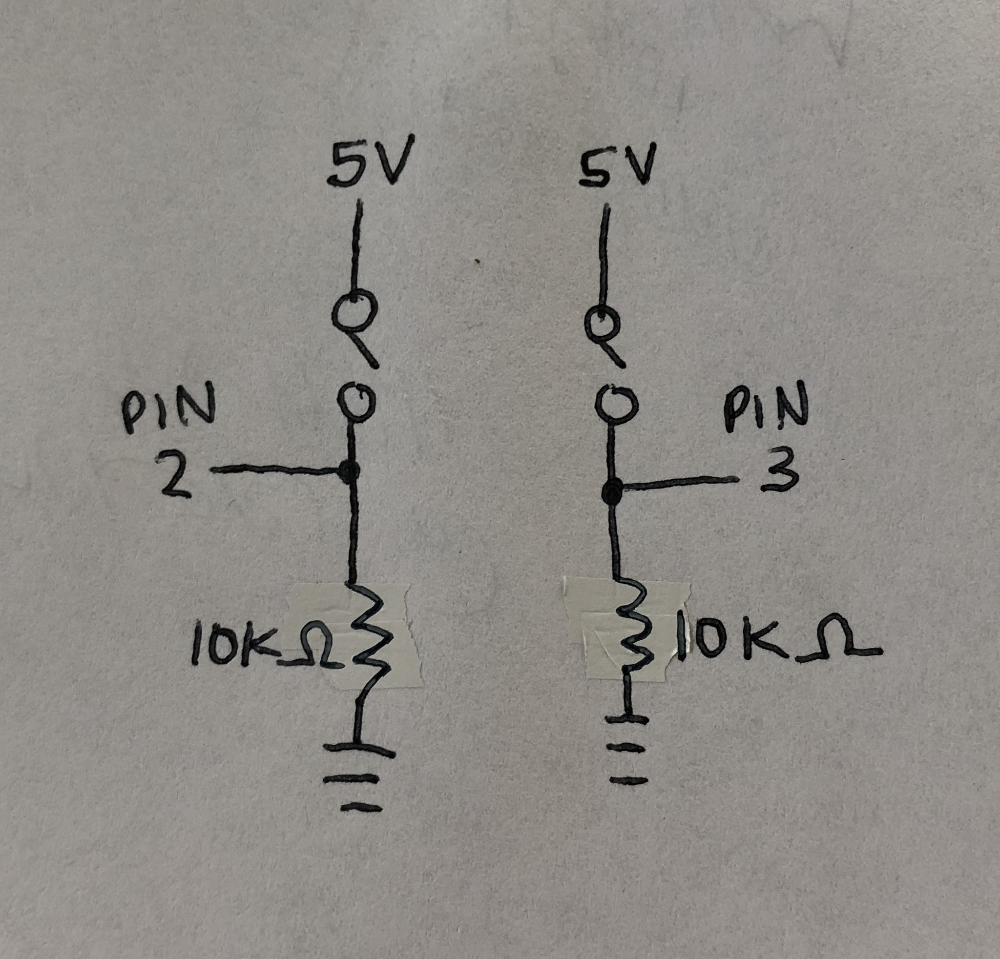
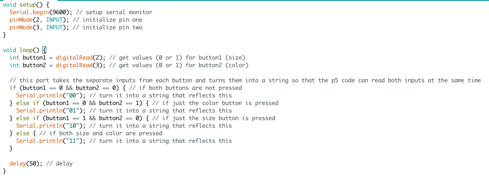
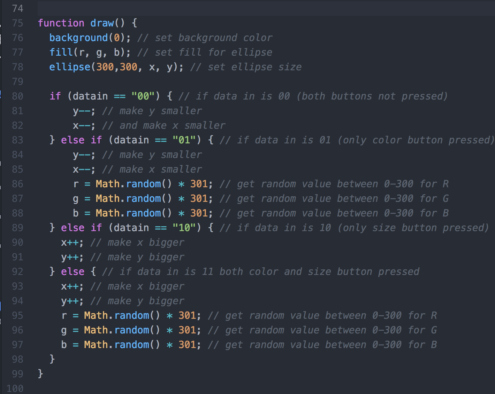
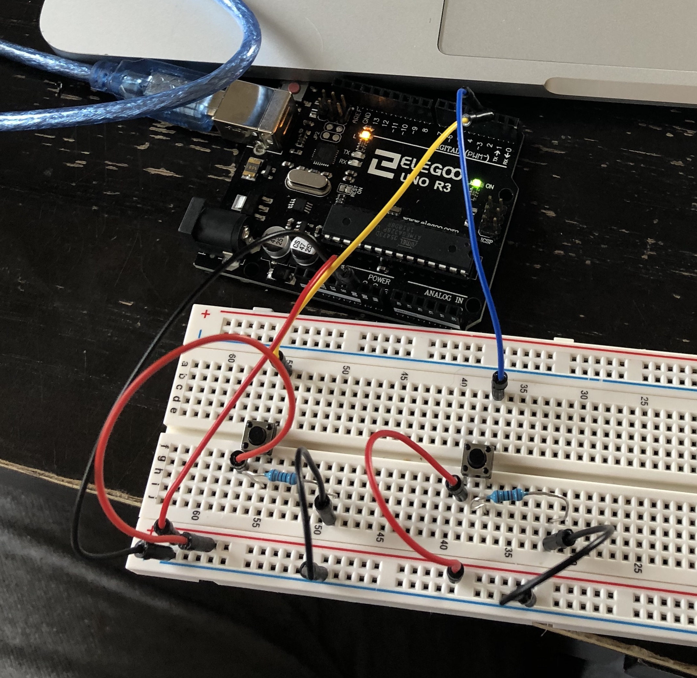

Alison's Assignment 5: Talking to the web!
Here is all the documentation for assignment 5!
Schematic

This is my schematic! I used 10K ohm resistors because those are the standard for buttons.
Code

This is my arduino code for the circuit. It is relatively simple, it looks for inputs from the two buttons and then transforms them into strings that can be read by sketch.js.
This is the segment of the sketch.js that I edited. If button1 is pressed, it makes the size of the ellipse bigger by increasing x and y, and if button 2 is pressed, it generates new random numbers for the rgb values of the ellipse's fill.
Circuit

This is a picture of my circuit!

And finally, here's a gif of my circuit's operation. I couldn't have done this assignment without the help of Jasper and prof Nadya in class! My p5 code is an edited version of the code that was supplied to us.